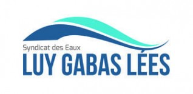
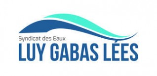

QUI SOMMES-NOUS ?
L'association Eau Vive Pyrénées malgré sa jeunesse ( naissance officielle en 2019) a une longue pratique de la solidarité internationale puisqu'en tant qu'antenne régionale au sein de l'ensemble Eau Vive elle a participé à la mise en œuvre de l'accès à l'eau et à l'assainissement dans les campagnes de l'ouest africain. C'est donc avec des valeurs affirmées et originales qu'elle poursuit son action : solidarité, démocratie, respect de la dignité des partenaires, en pariant sur leur responsabilisation et leur émancipation nécessaires pour la pérennisation des réalisations.
NOS OBJECTIFS
- Sensibiliser les français en particulier la jeunesse à la profonde injustice qui découle de l'inégal accès à l'eau, au blocage du développement qui en résulte dans ces campagnes sahéliennes alors qu'avec l'eau tout devient possible !
- Trouver des moyens de financement pour la réalisation de projets , définis par des techniciens africains à la demande et avec la participation des villageois africains, ce financement est recherché auprès des collectivités locales ou auprès du grand public lors de diverses manifestations


 
